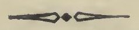

श्रीतन्त्रालोकस्य
श्रीमदाचार्याभिनवगुप्तपादविरचितस्य
आचार्यजयरथकृतविवेकाभिख्यव्याख्योपेतस्य
तृतीयमाह्निकम् ।
खात्मत्वेऽपि विचित्रं निखिलमिदं वाच्यवाचकात्म जगत् ।
दर्पणनगरवदात्मनि विभासयन्विजयते विजयः ॥ १ ॥
इदानीमनुपायानन्तर्येण क्रमप्राप्तं शांभवोपायं
द्वितीयार्धेन प्रणिगदितुं प्रतिजानीते

अथ परौपयिकं प्रणिगद्यते
पदमनुत्तरमेव महेशितुः ॥
ननु यदि नाम परोपायस्यापि अनुत्तरमेव रूपं
तत्पूर्वेणैव गतार्थत्वात् किमर्थमिदमाह्निकान्तरमा-
रभ्यते ? इत्याह
प्रकाशमात्रं यत्प्रोक्तं
भैरवीयं परं महः ।
तत्र स्वतन्त्रतामात्र-
मधिकं प्रविविच्यते ॥ १ ॥